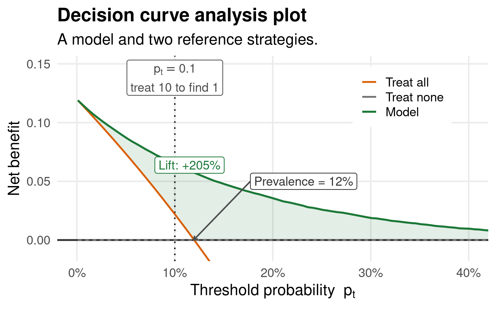
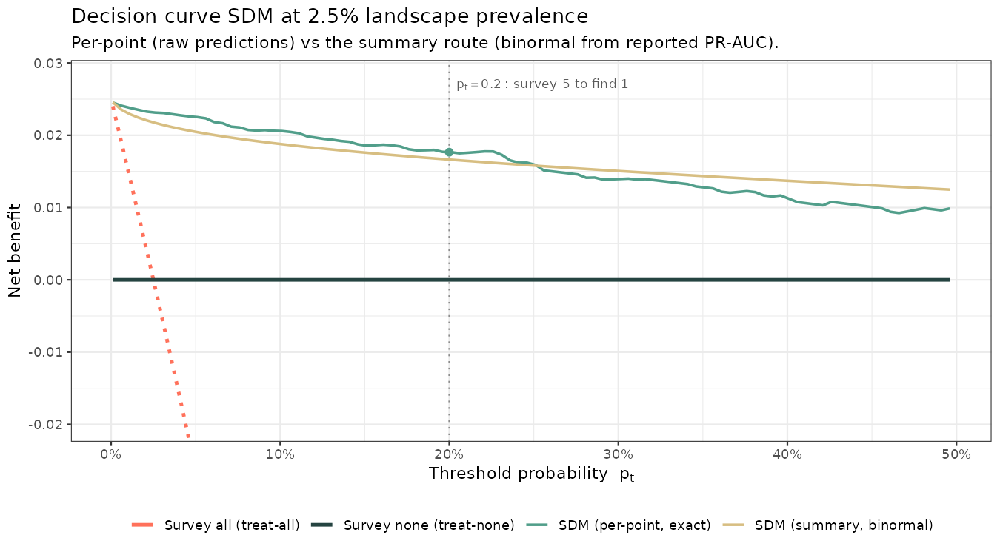
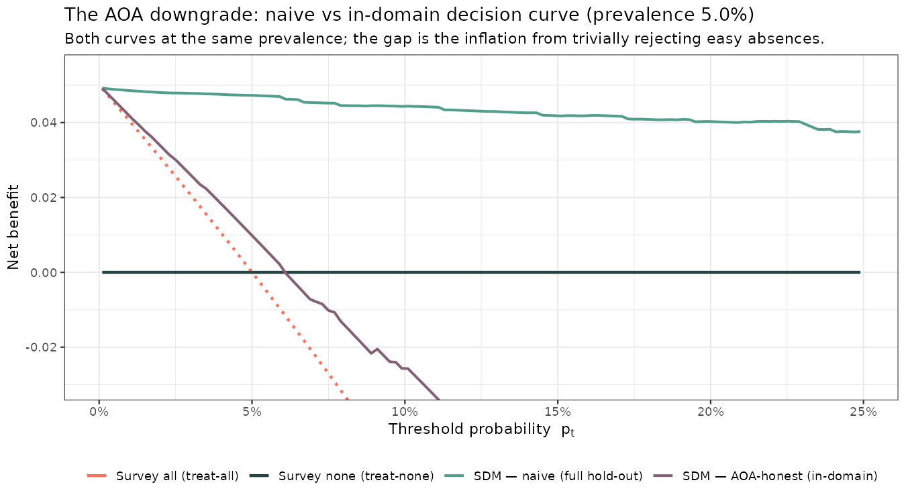

Evaluating the Benefit of Models in Land Management Using Decision Curve Analysis
Abstract
## 300 words max
Keywords
spatial data science, land management, conservation, rare plants, landscape ecology
Main
Introduction
Ecological models are being developed at an incredible rate. Unfortunately, the ability of land managers to use models is limited as a function of resources (Taddeo et al. 2026). Further, the benefit of applying models in decision making can oftentimes be difficult to estimate a priori, and a mismatch between the expectations of a model and it’s utility can lead to managers being discouraged from continuing to use academic research.
Here, we show that a framework used in clinical medical settings can help understand under what conditions a model can be helpful, and how they can complement expert judgement. Decision curve analysis (DCA) was developed in the early millenium by Vickers et al. (2006) to help practicing doctors evaluate medical studies in their everyday practice (Vickers & Elkin 2006). This tool offers a relevant lens to contextualise the net benefits of using models under certain conditions, for phenomena at different prevalences across the landscape.
Conceptual Background
Decision curve analysis is considered visually on a plot with two axis. The Y axis is the net benefit of making the action. For example … The X axis is the theshold probability (\(p_t\)), a metric each user will define based on their objectives. For example, if you were satisfied to find one new rare plant population per five sites surveyed (\(*1/5)*100\)), \(p_t\) is = 20%. A DCA plot always contains a line with a fixed intercept, at 0, and slope of 0 (i.e. a horizontal line) ‘treat none’; indicating the condition of making no action. A DCA also contains a ‘treat all’ line with a Y intercept of the NET BENEFIT, and a slope relating it to the prevalence of the phenomon in the population on the X axis. To the left of this line IS ((NAME)), to the right of it IS ((NAME)).
In practice, a DCA will generally contain two or more curves; although only one is required. If only a single model is available to inform decisions a curve of its … IS. The area above the ((NAME)) and ((NAME)) curve depicts the net benefit of the model for decision making. THIS is the …
The DCA may accomodate more than one model at a time, when additional models are available.
PR-AUC measures the ability of a model to detect the more rare class of an outcome, by using the precision (the accuracy of positive predictions) and recall (the ability to identify all positive instances) across different thresholds. PR-AUC, unlike the closely related ROC-AUC wherein a value of 0.5 indicates a model is no better than random chance, PR-AUC greater than prevalence indicates a more performant model. For example, if a species is truly distributed in 0.1 (10% of a landscape), and a model has a PR-AUC of 0.2, it is twice as likely to detect it at landscape prevalence as by chance. Hence PR-AUC, after correction to landscape prevalence,
From Patients to Pixels and Patches
DCA traditional context relates to the population of patients that a doctor serves. The doctor is likely to have beliefs on how often a certain procedure, generally an invasive procedure to detect a disease, and under what conditions a procedure should be conducted. Notably, this framework requires discrete entities (e.g. patients) that the doctors beliefs on treatment and a model pertain to.
For a land management application, the population is the area managed by a practicioner. However, the discrete units must be something such as: allotments (or geographic units within allotments), that would receive a treatment, already known populations of a species, stream reaches, or forest patches etc. For the application of species distribution models to detect new species, the unit of analysis must be defined as patches of suitable habitat; which tend to only exist with high resolution models; or can be recovered via clustering techniques (which, why?).
WHILE CREATING SDMS we calculate PR-AUC from the ratio of presences to absence points. However, these data are rarely balanced to the scale of the landscape. Indeed it is common practice for certain models to reduce the absences to be roughly 1-10x the number of presences (Elith). Hence using a 1:1 ratio of P:A, we are reporting the measures of success for a taxon that would occupy 50% of the lanscape.
Clearly, this is not the case - even for many of the most common species. Therefore, in the naive approach, we correct the PR-AUC to represent the expected fraction of the landscape occupied by the taxon. For a rare species this fraction is small, and for a narrowly distributed endemic it can be far smaller than often assumed: our case study taxon occupies only ~0.003% of its modeled domain, so a realistic range spans roughly 0.001% to 5% of a landscape.
Applying DCA formulations to SDMs
\[\frac{p_t}{1 - p_t} = \frac{\text{cost of one unsuccessful site survey}}{\text{value of finding one occupied site}}\]
\[\text{Net benefit} = \underbrace{\frac{\text{occupied sites found}}{n}}_{\text{successes}} \;-\; \underbrace{\frac{\text{empty sites surveyed}}{n} \times \frac{p_t}{1 - p_t}}_{\text{cost of all unsuccessful site visits}}\]
Case Study - Species Distribution Models
Study System Background
Eriogonum coloradense Small is a rare species endemic to the central Rocky Mountains of Colorado, USA. It has roughly XX populations, and YY subpopulations, exhibits a bimodal distribution, and is classified as SOMETHING. In Benkendorf et al. 2027 we iteratively develop, and ground truth, species distribution models for it.
For the purposes of this example we calculate the area of occupation as 1.25x multiplier of the known occurrence points, with a dissolved 50m buffer around them, which assumes each point represents a population extending in a 250m radius. Giving us a total area of 86.4276319 ha.
The size of the modeled domain 2.7144275^{6} ha, and the AOA as THIS. Giving a prevalence across the domain of: 0.003% , and a prevalence within the AOA of THIS %.
For \(p_t\) we would be, and indeed were, happy to find one new (sub-)population every fifth sampling event.
A priori approaches
Naive Formulation
The most accessible way to calculate a DCA curve for practioners is by metrics commonly reported in the literature (PR-AUC, recall (TPR), and FPR), along with an estimate of the species prevalence across the study area (discussed in ‘Using Summary Metrics’) For users with access to raw model predictions (the predicted probability, the observed presence/absence, and the location or applicability of each point) a more accurate assessment is possible, because the full precision–recall curve is observed rather than reconstructed from a handful of summary values (discussed in ‘Using Per-point Predictions’).
Using Summary Metrics
The most straightforward way to consider the benefits of using an SDM is to transform it’s PR-AUC, measured on held-out test data to the estimated landscape prevalence of the rare species. This is available as nearly all modellers report PR-AUC.
PR-AUC is transformed to the taxons landscape prevalence via:
\[\text{precision}_{\pi}(r) = \frac{O\, r}{O\, r + \text{FPR}(r)} \qquad\Longrightarrow\qquad \text{PR-AUC}_{\pi} = \int_{0}^{1} \text{precision}_{\pi}(r)\; dr\]
\[O = \frac{\pi}{1-\pi} \qquad \left(\text{e.g. } \pi = 0.025 \Rightarrow O \approx 0.026\right)\]
where \(r\) is recall, \(\text{FPR}(r)\) is the false-positive rate at that recall, and \(O\) is the prevalence odds, e.g. the odds a point drawn at random is occupied, set by the target landscape prevalence \(\pi\). Because recall and \(\text{FPR}(r)\) are properties of the model’s ROC and do not change with prevalence, the transform acts on precision alone: only the prevalence odds \(O\) moves.
Because PR-AUC is relative to the prevalence of the taxon across the landscape, values for rare species might be quite low. For example if a species has a prevalence of 2.5%, than a model with a PR-AUC of 0.25 is 10 times more likely to find it than an individual would by chance.
Using Per-point Predictions
binormal ROC, which assumes the model’s scores for occupied and empty sites each follow a Gaussian distribution.
Using the summary metrics route, above, requires constructing the precision-recall curve using a distributional assumption of a binormal ROC, which assumes the model’s scores for occupied and empty sites each follow a Gaussian distribution. However, if one has access to the statistical model itself, and the predicted probabilities for its test set, the DCA curve can be calculated from the observed predictions, bypassing this assumption. Using the predictions allows direct counting of precision and net benefit at each threshold, after correcting for prevalence.
A held-out test set, which generally has a different ratio of presences to absences than the species observed prevalence on the lanscape, has each point \(i\) re-weighted to the target prevalence \(\pi\) before scoring:
\[w_i = \begin{cases} \pi/n_1 & y_i = 1 \\[2pt] (1-\pi)/n_0 & y_i = 0 \end{cases}\]
where \(w_i\) is the weight given to test point \(i\), \(y_i \in \{0,1\}\) its known label (1 = presence, 0 = absence), \(n_1\) and \(n_0\) the numbers of presence and absence points in the test set, and \(\pi\) the target landscape prevalence.
Net benefit and the precision–recall curve are then calculated directly from the weighted and probability-ranked points:
\[\text{NB}(p_t) = \sum_{i:\, \hat p_i \ge p_t} w_i\, y_i \;-\; \frac{p_t}{1-p_t} \sum_{i:\, \hat p_i \ge p_t} w_i\,(1 - y_i)\]
\[\text{recall}(p_t) = \frac{1}{\pi}\sum_{i:\, \hat p_i \ge p_t} w_i\, y_i, \qquad \text{precision}_{\pi}(p_t) = \frac{\sum_{i:\, \hat p_i \ge p_t} w_i\, y_i}{\sum_{i:\, \hat p_i \ge p_t} w_i}\]
where \(\hat p_i\) is the predicted probability for point \(i\) and \(p_t\) the threshold. The weights sum to one and fix the effective prevalence at \(\pi\), so a point’s contribution no longer depends on the presence-to-absence ratio the model was fit with.
Our simulations (Appendix 1) indicate when a model was trained at a presence-to-absence (P:A) ratio far from the expected landscape prevalence, the summary route is biased and per-point predictions give a more accurate curve. When the P:A ratio is close to the landscape prevalence, the summary route is adequate and per-point predictions are unlikely to alter your intepretations of the models utility.
Naive formulation summary

However, while useful, both of these approaches entail three assumptions, which may not be safe for all decisions. First, that pixels are independent and each able to harbour the taxon; second, that the model is perfectly calibrated, without bias; and third, that it interpolates across the whole landscape rather than extrapolating into part of it.
Patch Formulation
The above assumes a continuous landscape, however survey work and decisions are unlikely to be across the entire surface. Rather actions are likely to be made at smaller units. Here we show the benefit of using an SDM to visit discrete units of it’s prediction.
<< methods note — patch delineation (single example model): binarize the predicted-probability raster at the sensitivity–specificity threshold to get a mask of suitable habitat, then run a marker-controlled watershed on the probability surface within that mask. Seeds are the local probability maxima (h-maxima); watershed lines fall on the low-probability necks between cores, so two cores split into separate patches when the surface dips sharply between them — even where that dip never crosses the binary threshold. A single prominence parameter δ (minimum depth of the neck below the lower peak) controls how aggressively necked blobs are divided; distance enters implicitly, since far-apart cores are separated by deep necks while cores joined by a wide high-probability corridor remain one patch. This is the fast substitute for boundary (wombling) detection. Each resulting patch is then scored as occupied if it contains ≥1 ground-truth presence, with an aggregated predicted probability (max or mean) over its pixels. Report the δ used and confirm the patch-level DCA is stable across a reasonable δ range. >>
We delineate patches on the example model’s probability surface by binarizing at the sensitivity–specificity threshold (sens_spec = 0.35) and running a marker-controlled watershed on the masked surface: cores separated by a probability drop of at least the prominence delta (= 0.05) split into distinct patches, even where that neck never crosses the binary threshold. Suitable cells with no interior core fall back to connected-component labelling, so no habitat is dropped, yielding 26664 candidate patches. Scoring each patch against ground-truth presences, and confirming stability of the patch-level DCA across a reasonable delta range, follow once real threshold and ground-truth values are joined in.
Correcting to the Area of Applicability
The area of applicability is the portion of the landscape where the model is interpolating. For SDMs our work has shown that the area of applicability (Meyers & Pebesma) is best calculated using only training presences, or these and ground-truthed absences. Many pseudo-absences, may be located far enough in environmental or geographic space that they do little to inform the ability of the model to detect rare species; rather they function as guards to prevent the prediction of suitable habitat in uncovered space.
Accordingly, models are expected to be less performant within the AOA than across the entire background landscape, because these easily-discerned absences inflate whole-landscape performance metrics (Lobos). To calculate this curve, the procedure outlined in section “Using Per-point Predictions” and test data that fall within the AOA. A user should also redefine their expected prevalence of the species within this subset of the landscape using the raster surfaces depicting the AOA. Across 128 models, restricting to the area of applicability lowered ROC-AUC by a median of ~25% and more than halved PR-AUC (from 0.61 to 0.25 at 5% prevalence); apparent skill shrinks sharply, yet net benefit stays positive at the decision-relevant thresholds (Appendix 2).
Note that AOAs are shaped as a function of the hyperdimensional space of independent variables. Hence, models with fewer covariates, are able to retain larger AOAs.

Combining Expert Opinions and the model
expert interpretation of top sites to visit and
A posteriori - how well did the model hold up?
A perfect model?
Discuss biases effects on the model here // bias introduced here
Using DCA Curves
To facilitate the uptake of our suggestions, we have prepared small packages in both the R and Python language. Our software builds on packages named dcurves in both programming langauges, and are available at: GITHUB MAIN LANDING PAGE (Porwal & Singh 2025; Sjoberg 2025). For users interested in using DCA using only summary PR-AUC values an interactive online calculator is available at GITHUB HERE.
We also have a developed a communication template, to convey the methods of our approach, and communicate your findings at GITHUB HERE.
Conclusion << 200 words >>
Biosketches << 150 words max >>
J.B.F. is the Director of Conservation at the Chicago Botanic Garden, member of the ~Illinois Endangered Species Counsel~ for XX years, and CPC/other ~office person~. The last ~ XX~ years of his career have focused on the conservation of rare plants ~ 1 2 3 4 5 words ~ and restoration. S.T. is a professor of ~Geo some flavour~ at the University of California San Diego. Her research focuses on enhancing urban wildland corridors and wetlands using decisions informed by remote sensing. R.C.B. worked as a field botanist and research ecologist for a variety of US federal and state land management agencies as well as NGOs for a decade. He currently works as a geospatial consultant in the private sector.
Funding
The authors have no funding to report.
Conflicts of Interest
The authors declare no conflicts of interest.
Data Availability Statement
All analysis code, and occurrence data for this manuscript are available on GitHub at [REPO URL]. The individual model objects used in this manuscript are available on Zenodo at [URL]. Data from the referred manuscript are available at [], and [].
Appendix
- WORDS
- WORDS
article types notes below
Practitioner’s Perspective: Aims to bridge the gap between applied ecological research and the actual practice of species conservation, ecosystem restoration, pest management and the mitigation of environmental threats to biodiversity. They provide a platform for individuals involved in hands-on management of ecological resources - be they species, ecosystems or landscapes - to present their personal views on the direction of applied ecological research. The article should be of international relevance, even if based on a regional study, and should make clear recommendations regarding how the issue can be taken forward to ensure improved science-based practice. Contributions should be up to 4000 words in length (inclusive of all parts of the main manuscript) and contain no more than 20 references. The article should be written with the minimum of technical language and jargon, so as to be understandable to a general audience. These articles should not generally present new data or analysis (although this does not preclude a small amount of analysis providing evidence to support the opinions or perspectives given) or require online supporting information to be consulted. At least one author should have direct experience of the practical management of the environment. A short biosketch describing the research interests of the author(s) should be included (30-100 words for one author/150 words for the first three authors, respectively). Articles should be written in essay format with the subject headings selected according to the content of the manuscript. These articles should include a short abstract of no more than 300 words. It should consist of numbered paragraphs and the final paragraph needs to summarise the main management implications and recommendations. The authors’ contributions, data availability statement and references sections should be formatted according to manuscript specifications, below. Please visit the Practitioner’s Perspective page to view articles.
target reviewers:
Jenica Allen
References
Porwal, S. & Singh, R. (2025) dcurves: A Python package for decision curve analysis to evaluate prediction models, molecular markers, and diagnostic tests.
Sjoberg, D.D. (2025) Dcurves: Decision Curve Analysis for Model Evaluation.
Taddeo, S., Benkendorf, R.C., Fant, J.B., Iler, A.M., Touloupas, A., Ortiz Cano, H.G., Kiefer, G., Buttelmann, G.L., Duda, M.A., Schooley, J.R. & others. (2026) Species distribution models to identify drivers and forms of plant species rarity: Opportunities, limitations and research needs. Diversity and Distributions, 32, e70275.
Vickers, A.J. & Elkin, E.B. (2006) Decision curve analysis: A novel method for evaluating prediction models. Medical Decision Making, 26, 565–574.